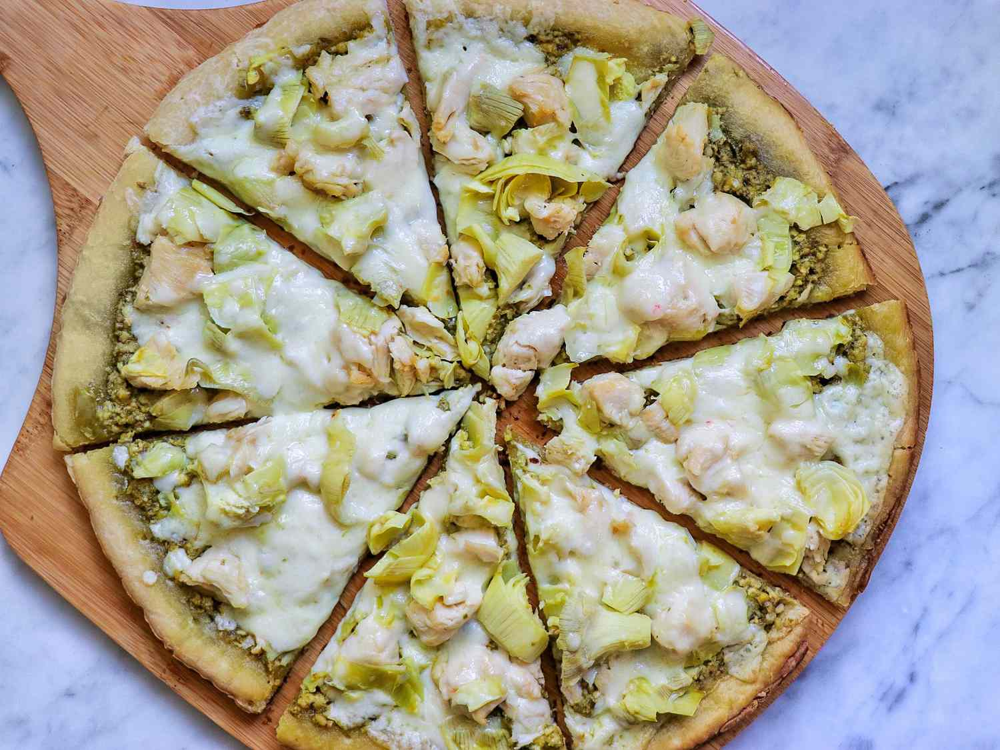

Chicken-pizza

Description
This BBQ chicken pizza has spicy barbecue sauce, diced chicken, peppers,onion, and cilantro, all covered with cheese and baked to bubbly goodness!
This is similar to a recipe I had at a popular pizza place in california.
My family loves it!
Ingredients
1 (12 inch) pre-baked pizza crust
1 cup spicy barbegue sauce
2 skinless boneless chicken breast halves, cooked and cubed
1 cup sliced pepperroncini peppers
1/2 cup chopped fresh cilantro
2 cups shredded Colby-Jack cheeese
Steps
Gather all ingredients. Preheat the oven to 350 degrees F(175 degrees C)
Place pizza crust on a baking sheet. Spread barbegue sauce on crust
Top with chicken, pepperoncini peppers, onions, and cilantro.
Cover with Colby-Jack cheese
Bake in the preheated oven until cheese is melted and bubbly, about 15 minutes.
Home